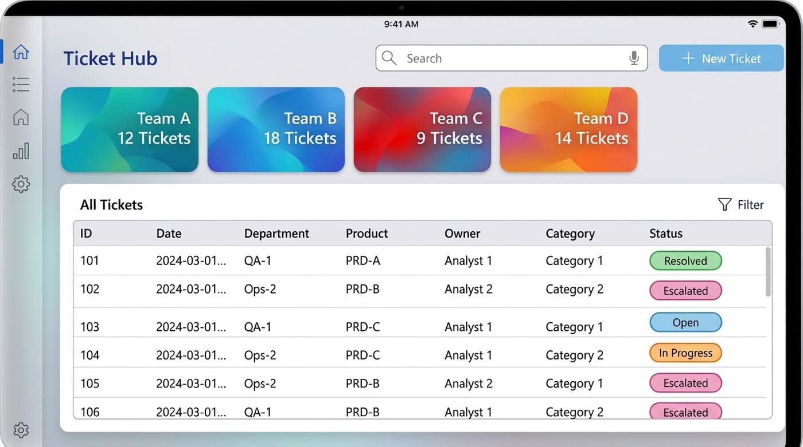
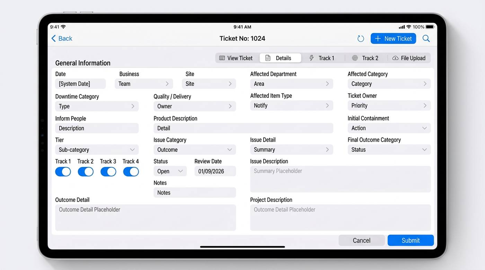
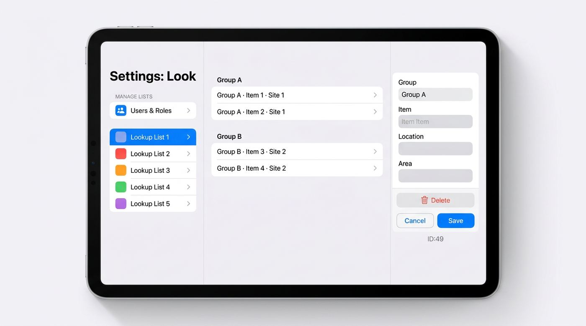
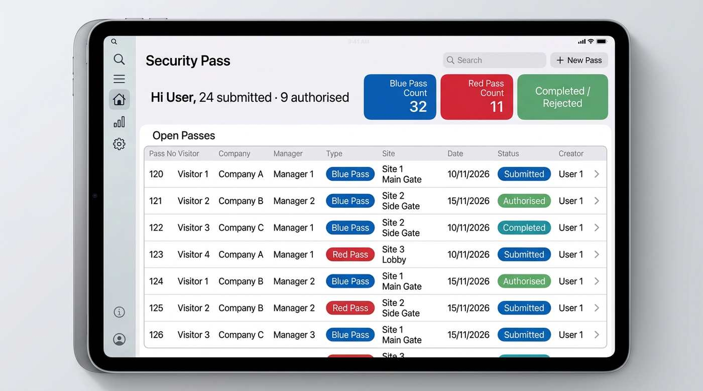
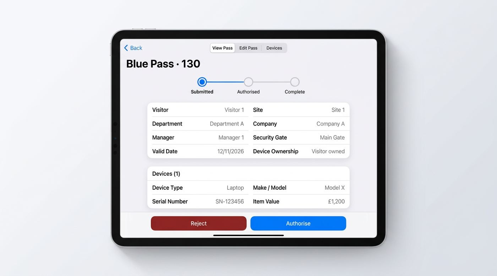
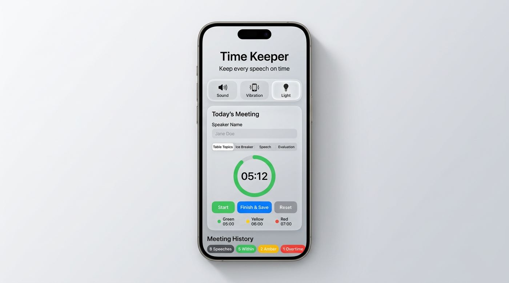

Power Platform · Dynamics 365 · Azure
Hari Arayakeel
Full-stack Microsoft developer and solution architect. I design and build production business systems on Power Platform, Dynamics 365 and Azure, with clean, simple interfaces shaped by what stakeholders actually need.
What I do best
Simple screens, built on what people really need.
Modern, simple user interfaces
Top skill
Seamless, clean, intuitive screens people pick up without training.
Stakeholder understanding
I talk with stakeholders to find what they actually need, end to end, before building.
Ideation
I turn a messy manual process into a clear app idea and solution design.
About
I turn messy business processes into systems people actually use.
I design Power Platform, Dynamics 365 and Azure data and integration solutions, and have delivered 50+ apps and automations within the business. I also lead the company's global Power BI reporting.
Power Platform solutions · selected work
Eight enterprise apps, designed and built end to end.
Canvas apps with Power Automate workflows and Power BI reporting, from first workshop to go-live.

SafeTrack — Incident & Action Management
Non-compliance ticketing for multiple business units, supporting Rapid Problem Solving and central incident tracking. Role-based workflows, automated email notifications and Power BI reporting give real-time visibility of status and resolution performance.
Power Apps Power Automate Power BI

Product Enquiry Hub
Tracks customer price and quantity enquiries end to end. Sales, supply chain, costing, dispensing and packaging teams work in one app with no manual handovers. Power BI dashboards show enquiry volume, response SLAs and bottlenecks.
Power Apps Power Automate Power BI

AssetFlow — Asset Management
Full lifecycle management for laboratory equipment: create, track, audit and retire assets. Lifecycle states, audit workflows, automated notifications, reporting dashboards and Excel exports improve traceability and audit readiness.
Power Apps Power Automate Excel export
OTIF Tracker — Order Fulfilment
On-Time-In-Full tracking for supply chain teams to follow every order end to end. Automated status updates, exception notifications, Power BI analytics and Excel exports improve delivery performance and transparency.
Power Apps Power Automate Power BI

In Their Shoes — Skills & Mobility
Employees request skill-development opportunities outside their formal role. Automated approvals, manager assignment, participation tracking and reporting support internal mobility and upskilling.
Power Apps Power Automate Approvals

ProjectHub — Digital Governance
A Jira-style governance app to manage and track projects monthly and yearly: project creation, status tracking, team collaboration, progress reporting and portfolio-level Power BI visibility.
Power Apps Power BI Governance

Access Pass — Site Access & Clearance
Site access for internal staff and external contractors. Automates security approvals, clearance-manager workflows and device declarations, with notifications and reporting for compliance and audit.
Power Apps Power Automate Audit trail

Work Pack Manager — Contractor Packs
Generates contractor document bundles automatically by contractor type and site-entry requirements. Digitises safety, health and equipment paperwork, replacing paper and cutting walks between departments.
Power Apps Power Automate Document generation
Illustrative mockups with fictional sample data, recreated to protect confidentiality.
Featured project · Power Apps canvas app
Non-Compliance (NCN) Ticketing System: one way to raise, route and resolve issues.
The company's main non-compliance ticketing system.
The problem. A multi-business organisation needed one consistent way to raise, route and resolve non-compliance issues.

Automatic routing
Tickets route to the designated owner, and named people are notified.
Resolution tracks
Tickets follow one of several resolution tracks, each with its own screen.
Clean data by design
Almost every field is a governed dropdown: no typos, clean reporting data. File upload for evidence.
Filter and report
A filter panel narrows tickets by team, area, date range, owner, category and type. A Power BI report is embedded in the app.


Power Apps (canvas) Power Automate notifications Dataverse / SharePoint Power BI embedded Role-based access
Screens recreated with sample data to protect company confidentiality.
Featured project 2 · Power Apps canvas app
Security Pass App: visitor devices logged and approved without walking the site.
Rolled out across every security area.
The problem. Devices and equipment visitors brought on site were logged and approved by hand, with people walking between security and different areas for sign-off.
What it does. Every external visitor gets a pass. Security logs each device or item they carry at the gate, then security and the relevant area manager approve it with notes.

Two pass types
- Blue Pass: valid only on the day it's issued
- Red Pass: for visitors bringing high-value items
Progress tracker
Each pass moves through Submitted, Authorised and Complete.
Automatic notifications
Notifications go back and forth between security and area managers, so nobody walks to another area for sign-off.
Hands-off housekeeping
Passes complete automatically, and expired same-day passes are rejected automatically. The home screen shows live counts of open blue and red passes.

Power Apps (canvas) Power Automate approvals & notifications Scheduled flows: auto-completion & expiry Role-based access
Screens recreated with sample data to protect company confidentiality.
Open-source projects · Volunteer
Free and open source — any club can use them.
Built for my Toastmasters club, Anglia Communicators #3380, Peterborough.
Toastmasters Time Keeper (v1)
A browser-based speech timer with green, yellow and red timing signals for each speech type.

Time Keeper with Meeting History (v2)
It remembers the meeting.
- Records speaker name and speech type: Table Topics, Ice Breaker, Other Speech, Evaluation, General Evaluator
- Auto-records timing status: within time, amber, overtime
- Whole-meeting history with summary counts; start a new meeting
- Exports the meeting log to CSV
- Visual, sound and vibration alerts
- Keeps the screen awake (Wake Lock API)
- Light/dark theme; data stored locally in the browser
HTML CSS Vanilla JavaScript
Club Calendar Automation
A Google Apps Script job that pulls the club's meeting JSON feed, filters and sorts upcoming meetings, and handles UK date/time conversion.
It publishes an iCalendar (ICS) subscription for Apple and Google Calendar that refreshes daily, running in the cloud with no server to maintain.
Other work
Reporting, data pipelines and automation across the business.
Global OTIF reporting
On-time-in-full Power BI reporting across UK and US manufacturing sites.
Azure data & integration
Data Factory, Synapse and Data Lake pipelines replacing manual data handling.
Automation & integration
- Power Automate automations
- Dynamics 365 and ERP/MES integration
Governance & enablement
- Power Platform governance
- Citizen-developer and Power BI training for business users
More app shells available on request.
Skills
The Microsoft stack, end to end.
UI/UX design Stakeholder engagement Power Apps Power Automate Dataverse SharePoint Power BI Dynamics 365 Azure Data Factory Synapse Data Lake SQL JavaScript Google Apps Script REST/JSON Solution architecture Governance
Contact